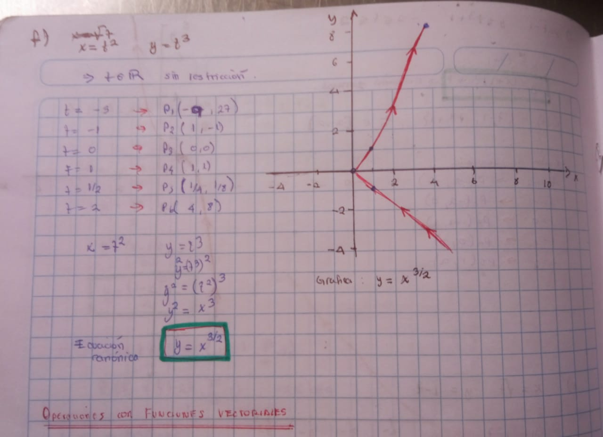
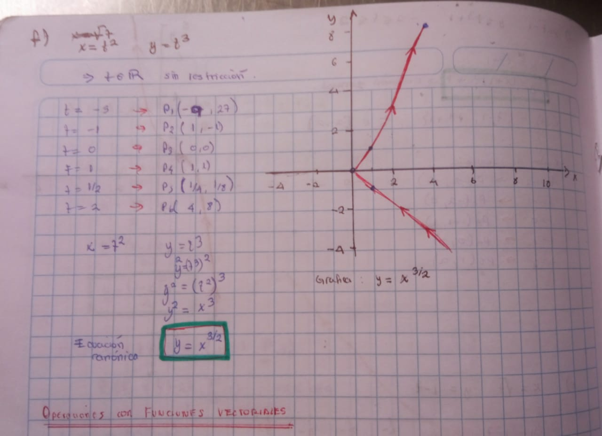

Ejercicio 1
Dominio de las funciones:

Dominio de las funciones:
Usamos los parametros de las funciones para hallar los puntos de la ecuacion en su forma canonica:


 

Gráfica de las ecuaciones de acuerdo al tiempo t creciente:
Grafica de las funciones parametricas considerando el dominio de t:

>>>>> Pulse play para visualizar la grafica, intente alejar el recuadro para mejor visualización...
Existen 2 puntos de intersección
Hecha la simulacion de cada tiempo t no se visualiza los puntos de colision
Dado que las ecuaciones parametricas y elk ragon de valores que puede tomarekl parametro son los mismos. entoces la trayectoria sw nantiene igual